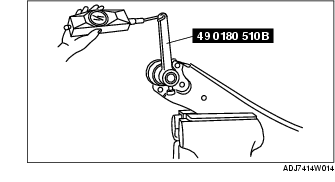

Front lower arm inspection
1. Remove the lower arm from the vehicle.
2. Inspect the arm for bending or damage, and the ball joint for excessive looseness.
3. Rotate the ball joint stud 5 times.Install the SST to the ball joint stud, measure the rotational torque using a pull scale.

Front lower arm ball joint rotational torque